Multiapp-Comercial este un instrument puternic destinat gestionării activităților dintr-un departament IT sau suport IT. Acest ghid explică fiecare funcționalitate a aplicației și modul în care pot fi utilizate conturile pentru uz public, salvate în fișierul `Accounts.txt`.
Logare
- Conturi publice: Salvate în `Accounts.txt`.
- Cont IT: Utilizator `it`, parola `copiere`.
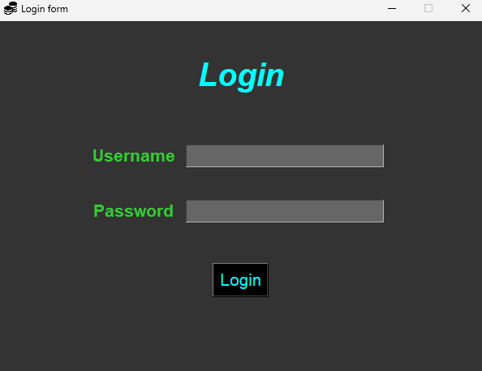
Funcționalități
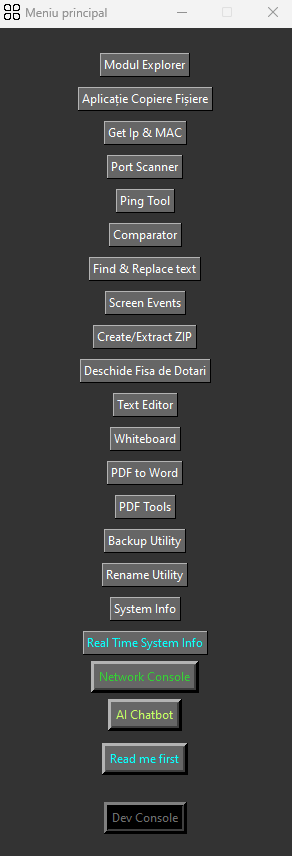
1. Modul Explorer
Permite copierea unor foldere/fișiere într-un mod dinamic. Practic, utilizatorul va salva path-urile locale în fisierele txt corespunzătoare și dacă are nevoie ca procesul să fie automat, parser-ul va ști să caute fiecare path, linie cu linie, pentru ca utilizatorul să economisească timp pentru utilizările viitoare. E ca și cum ai naviga manual în File Explorer, doar că path-urile alese de utilizator vor fi salvate pentru a putea copia mai simplu.
2. Aplicatie Copiere
Aplicație copiere: este o aplicație ce gestionează path-urile deja înregistrate de către departamentul IT în vederea copierii fișierelor. Acele path-uri pot fi, de asemenea, dintr-o locație network (pe un server) sau local, din computerul vostru. Acest proces este util pentru a configura un nou calculator, iar primul pas după introducerea în domeniu a noului PC este să copiem programele necesare pentru a-i asigura o bună funcționare care să îndeplinească cerințele din fișa de dotări a departamentului IT. Fișierul destinație va fi C:\KIT. Există un meniu de butoane în dreapta care are corelație cu fișa de dotări: de exemplu, copiezi anumite programe pentru director, deci se bifează automat checkbox-urile cu programele ce urmează să se copieze. Există si un buton care deschide o mini consolă network și este utilă pentru a vedea dacă se copiază fișierele dintr-o locație network sau nu. De regulă, când aplicația nu interacționează prea mult cu internetul, atunci o să vedeți 0.00 ca și valori. (am decis să fie extact 2 zecimale)
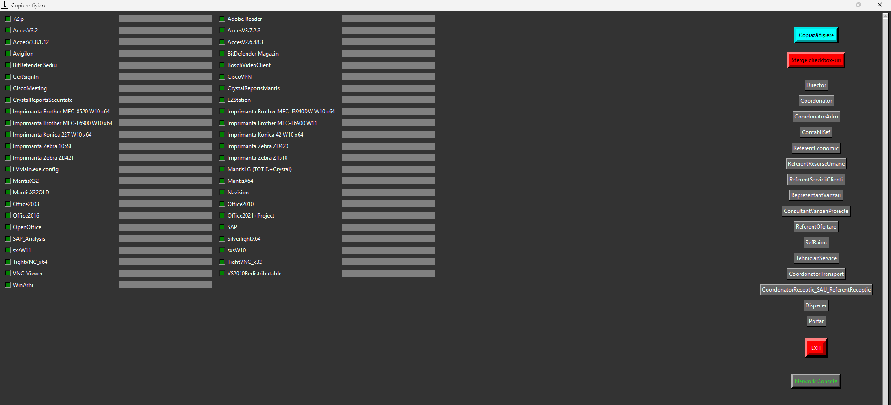
Față de copierea clasică, aceste două modalități de copiere se realizează într-o manieră mai eficientă (18.8% ~ 20%), deoarece locațiile sunt deja precompilate și biții sunt direct alocați către fișierul destinație.
3. Get IP & Mac
Afișează adresa IP și MAC a PC-ului tău. Pe lângă asta, afișează și adresa MAC a unui device conectat la VLAN sau LAN.
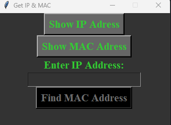
4. Port Scanner
Afișează toate porturile deschise ale oricărui device aflat în rețea.
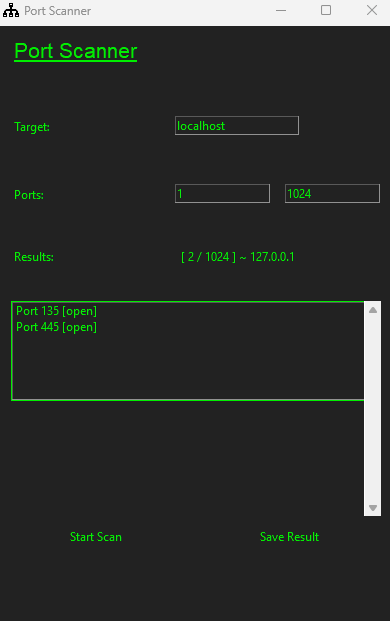
5. Ping Tool
Execută Ping către anumite device-uri și poate afișa ce porturi sunt deschise.
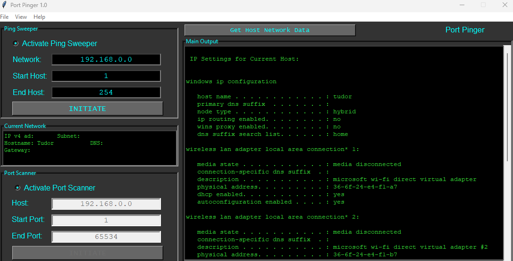
6. Find & Replace
Caută un grup de caractere în textul tău și îl poate înlocui cu un alt grup de caractere.
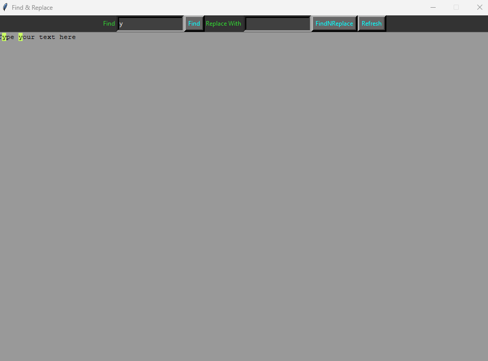
7. Screen Events
Screen recording & screen shoot.

8. Create/Extract Zip
Creează/extrage o arhivă și poate extrage, de asemenea, doar o selecție dintr-o arhivă. Functionează numai cu zip.
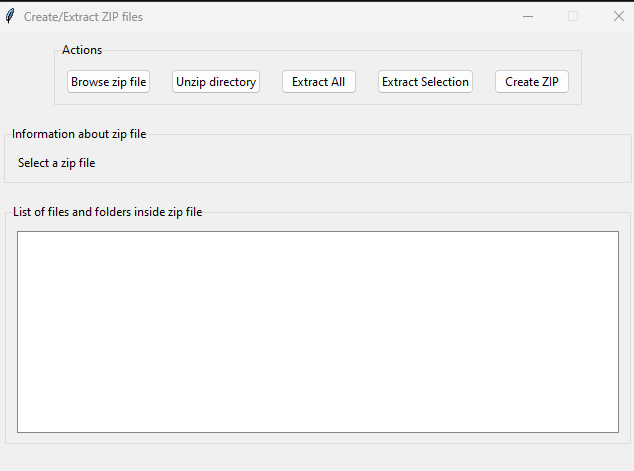
9. Deschide fisa de dotari
Se presupune că fisa de dotari este un Excel. Acest tool te va ajuta să deschizi fisa fără a avea nevoie de Office instalat pe noul PC.
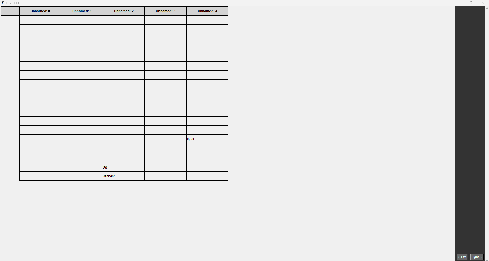
10. Comparator
Compară 2 fișiere sau 2 foldere pentru a identifica diferențele.

11. Text Editor
Este o copie a programului Notepad, utilă pentru notarea rapidă a lucrurilor.

12. Whiteboard
Un mini Paint pentru scheme/desenat.
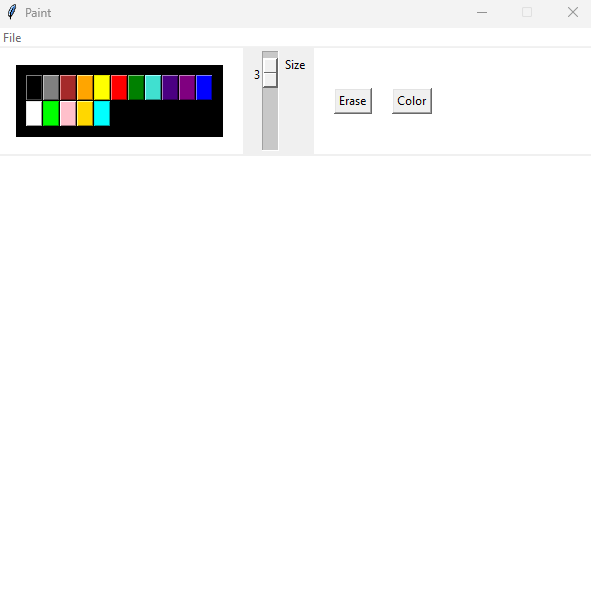
13. PDF to Word
Convertește un fișier PDF în Word și se pot salva și imaginile din acel fișier Word separat.

14. PDF Tools
Oferă diverse tool-uri pentru manipularea unui fișier PDF: criptare/parolare, extragere imagini, rotirea paginilor, separarea paginilor în fișiere PDF multiple și ștergerea paginilor dintr-un fișier PDF.
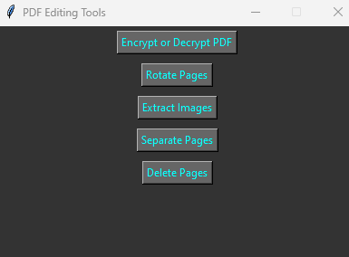
15. Backup Utility
Oferă funcționalitatea de a crea un backup pentru datele sensibile sau anumite date care urmează a fi modificate și sunt destul de importante. Utilizatorul decide când este util să folosească acest utilitar.

16. Rename Utility
Redenumește anumite fișiere dintr-un folder selectat.
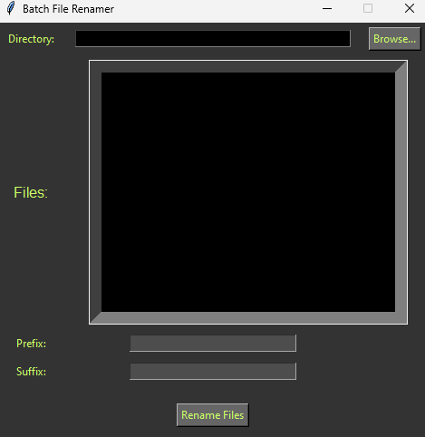
17. System Info
Afișează diverse informații ale sistemului tău și poți opera mai multe lucruri: deschide power planul, introducere a PC-ului în domeniu, generează un raport al bateriei, deschide aplicațiile în Control Panel și poate afișa chiar și licența Windows și service tag-ul.

18. Real time system information
Afișează în timp real informațiile sistemului tău.
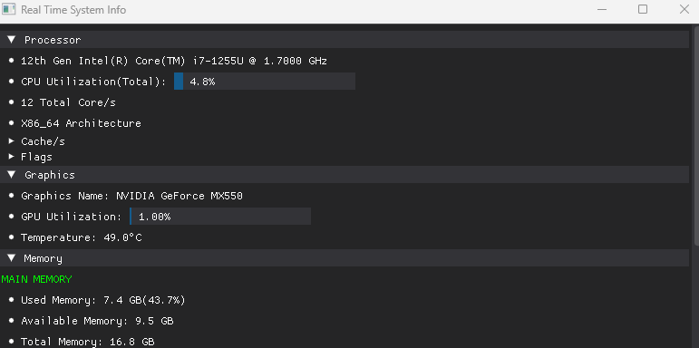

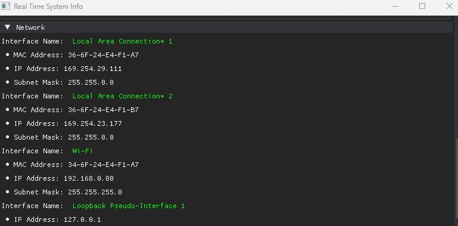
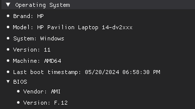
19. Network Console
Afișează diverse informații despre rețeaua ta: pachetele de date trimise sau primite, parolele wi-fi înregistrate, cine este conectat în LAN, și diverse informații despre rețea.
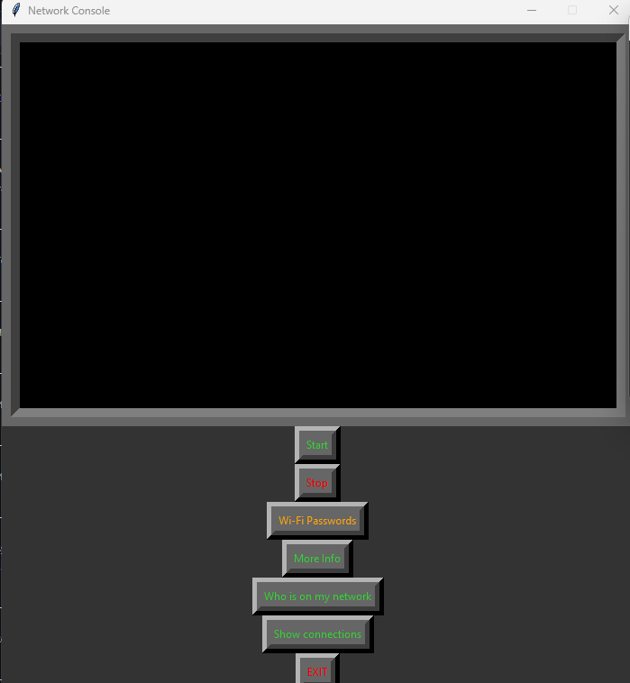

20. AI Chatbot
Este asistentul tău virtual pentru aplicație. Explică informațiile necesare pentru funcționarea completă, inclusiv mapările network.
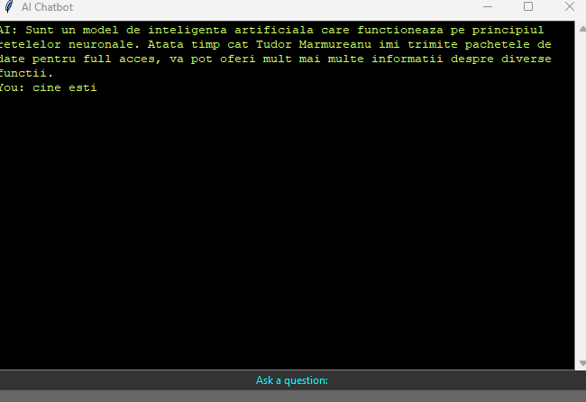
21. Read me first
Oferă o gamă sintetizată de informații pentru a putea folosi aplicația corect și pentru a evita posibilele erori.
22. Copierea fișierelor
Dacă se dorește numai copierea fișierelor, atunci există un cont special și anume: user/nopass.

23. Terminal Emulator
Simulează un CMD normal și chiar o interfață Linux. Accesul este restricționat conform politicilor de securitate.

24. Generarea parolelor
Există 2 conturi pentru generarea parolelor: passgen/passgen și passgenV2/passgenV2.


25. Monitorizarea benzii rețelei
Contul bandmonitoring.networking generează un grafic în timp real al comportamentului rețelei tale.

26. Criptarea fișierelor
Contul cryptoV2/securitate criptează datele folosind algoritmi de complexitate ridicată.

27. Testare
Contul quiz/test permite susținerea testelor cu maximum 4 variante de răspuns pentru fiecare întrebare.
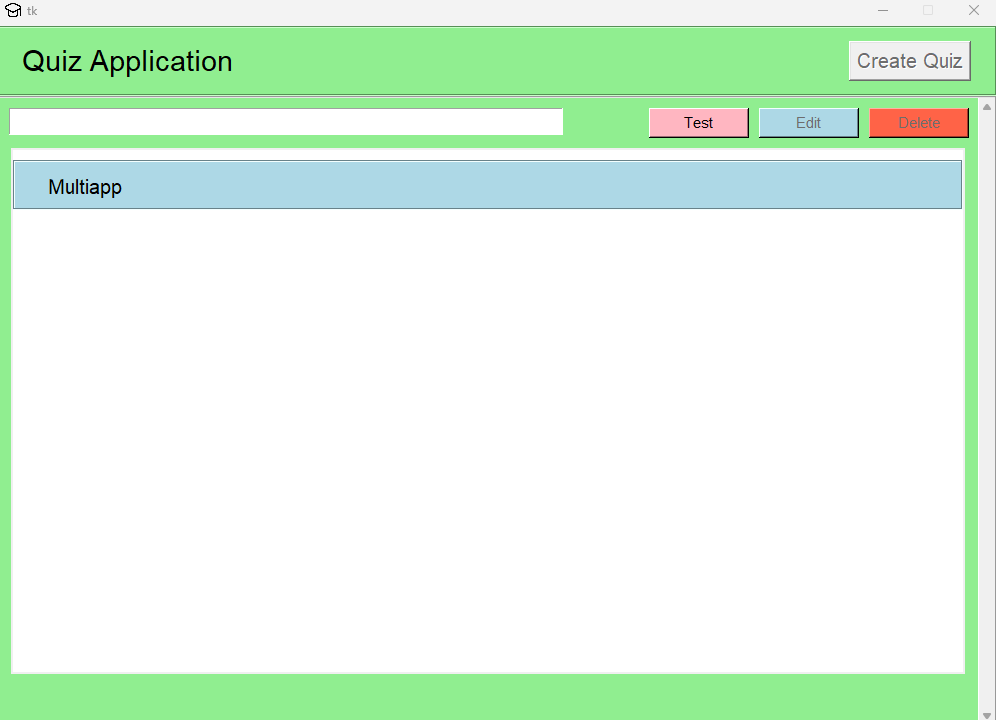
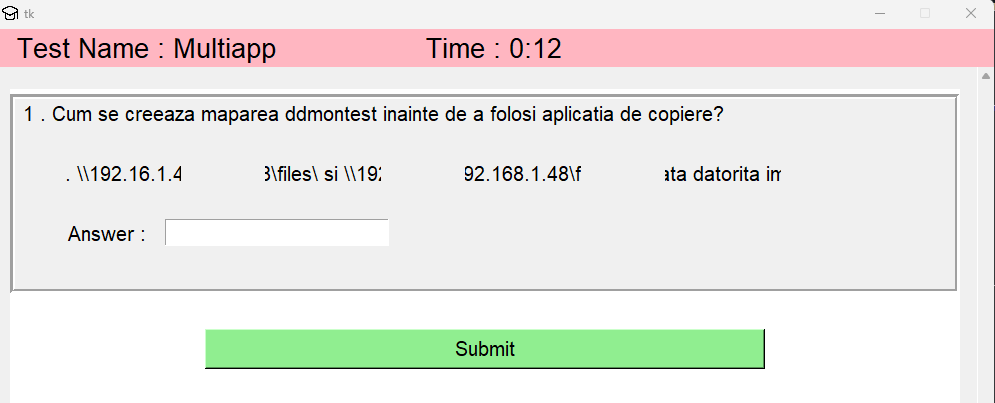
28. Spargerea parolelor ZIP
Contul permite accesul în arhive zip protejate cu parolă. Algoritmii implementați sparg parolele respective.

29. Knowledge Base
Aceasta este o platformă locală unde se pot salva tot felul de referințe sau proceduri. Sunt structurate pe categorii diverse (Networking, Hardware, Linux, Printers, Apps, Programming, Others) pentru a le putea găsi mai ușor.
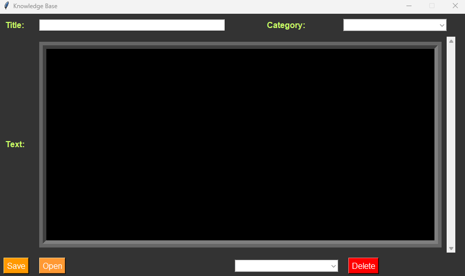
30. Password Manager
Este un utilitar ce ajută la salvarea parolelor într-o bază de date criptată.
Prima dată, trebuie să se creeze o parolă ce permite accesarea bazei de date.
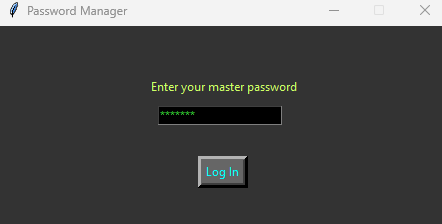
Puteți administra parolele salvate, fie să le ștergeți, fie să le schimbați.
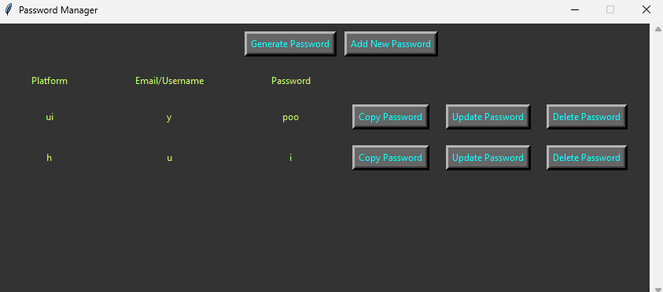
De asemenea, puteți genera o parolă în mod aleatoriu (folosind un algoritm puternic) sau folosind numai caracterele introduse în primul câmp.

31. Pause Manager
Această fereastră vă ajută să gestionați pauzele din cadrul echipei IT, mai ales dacă trebuie să se aloce solicitări/tichete și trebuie să știi cine a revenit sau nu din pauză. Se pot crea liste cu persoanele care sunt în echipa IT folosind meniul de Generare JSON. Acest fișier cu extensia .json va fi salvat în path-ul scris în fișierul ChooseLocationForPause.txt. Am ales să fac în maniera asta, deoarece dacă se dorește ca fișierul să fie accesat pe un server (pentru ca toți membrii echipei să poată vizualiza în timp real modificările pauzelor), de exemplu, atunci este bine ca path-ul să fie variabil (\\192.....\files\ -> exemplu de cale care duce către un server).

32. Task Manager
Această consolă este un simplu task manager: închide orice execuție de program, arată procentajul de utilizare al memoriei și al pachetelor de date care se transmit/vin în cadrul rețelei. Desigur, există și o diagramă.
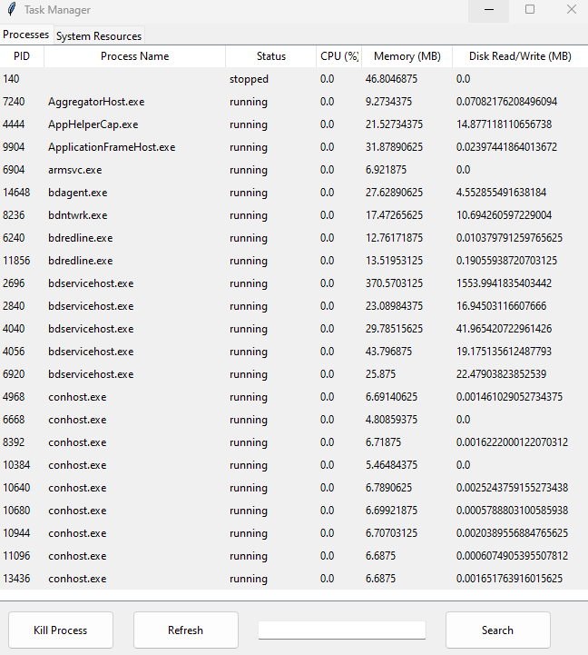

Aceste conturi sunt destinate utilizării publice și accesul este restricționat pentru a preveni utilizarea necorespunzătoare a aplicației. Utilizatorii finali nu au acces complet la toate funcționalitățile, inclusiv consola Dev, pentru a evita daunele potențiale atât în rețea, cât și în domeniu sau pe partea hardware.
Am creat și un Launcher care ajută la rularea simultană a mai multor conturi/aplicații. Din motive de securitate, dar totodată și din cauză că aplicațiile rulează mai eficient când sunt executate separat, am decis ca acest Launcher să deschidă mai multe sesiuni în paralel care să nu impacteze performanța aplicației. Adică vă puteți loga cu mai multe conturi în instanțe separate.